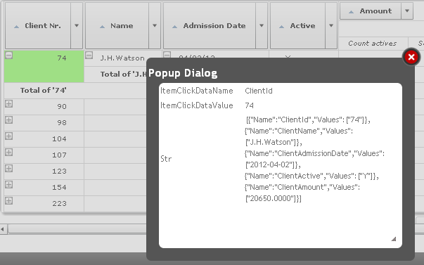

It allows programming actions when this event is triggered after clicking on an element of the query.
&ItemClickData.{ Axis | Context | Filters | Name | Value }
When the event is triggered, its parameters are queried in the "ItemClickData" property. It returns an SDT with the following data:
In this example, code is added to the event so that clicking on the Client Nr element opens a popup window showing the element name, its value and context.
Event QueryClients.ItemClick
&StrContext = &ItemClickData.Context.ToJson() //&StrContext is a VarChar/LongVarChar/Character type variable
&window.Object = PopupDialog.Create(&ItemClickData.Name,
&ItemClickData.Value,
&StrContext)
&window.Width = 400
&window.Height = 300
&window.Open()
EndEvent

Is possible to execute the Click event in:
Output type: Table, PivotTable, Chart.
See Also